圖說：鐸瑪士總主教來訪輔大，進行「關於人權，天主教能說甚麼呢？」議題講座分享。
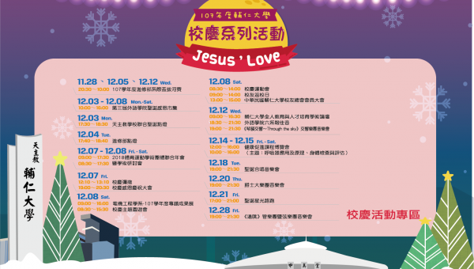
各位親愛的校友:一年一度的校慶將於12月第一週開始，輔大即將充滿耶誕節慶氣氛，邀請您與您的家人一同回輔大走走逛逛，更期待12/8當天回到母校感受當年在校永恆時間與熱鬧的聖誔時光。
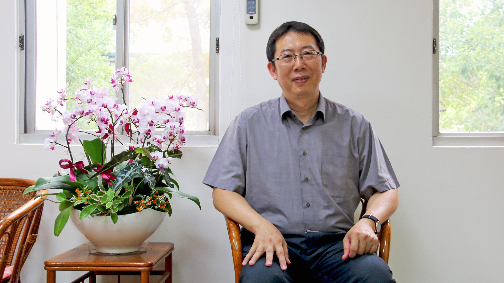
體走進文學院院長辦公室，立即被典雅樸實的氣息包圍，幾把籐編織的桌椅佇立於牆邊，體現了文學院樸實無華的風格。
法律學系郭土木教授今年八月接下法律學院院長一職，同時身兼財經法律學系原住民碩士在職專班主任，雖然行政上要處理的事情與日俱增，
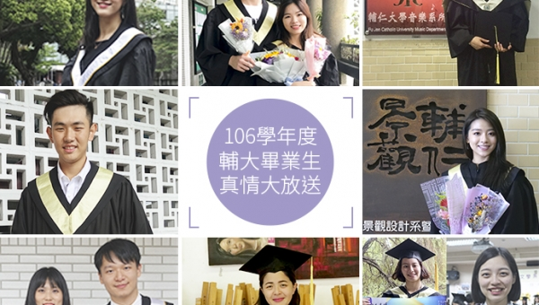
圖自左第一排起：運管學程劉米炘、哲學系鄭惟元與黃韶琦、音樂所胡家明、歷史學系霍翊中、景觀系賴靖雯、圖資系吳亞軒與王錦箴、應美系冼潔欣、文創學程郭曉萱及中文系郭紅。
至今日(8月23日)本校學生代表國家參加2018印尼雅加達巨港亞運賽事,捷報不斷:
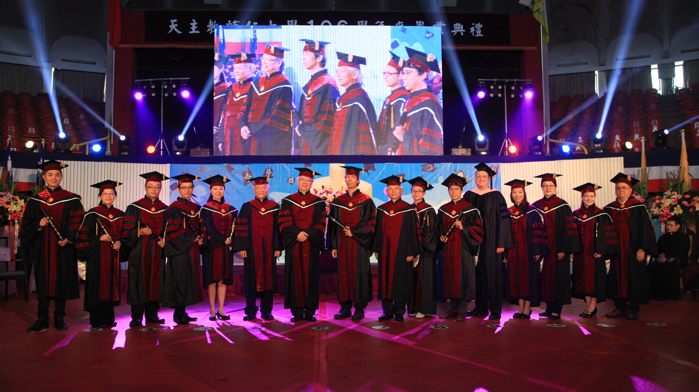
天主教輔仁大學１０６學年度畢業典禮於６月１６日星期六上午九時，在中美堂盛大舉行。
輔仁大學學生事務處於106學年第二學期推出一本全國首創的導師輔導工作書「輔至心靈─導師輔導工作寶典」，
好幾年沒辦的輔大校園攝影比賽，今年終於再度舉辦~輔大教職員生+校友+喜愛攝影的朋友們歡迎參加！
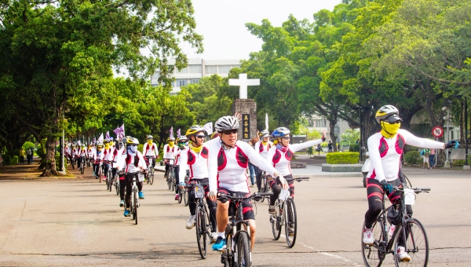
輔仁大學第九屆鐵馬環台說明會5月9日於積健樓211教室舉辦，今年主題為「鐵騎熱血 傳承精神」，
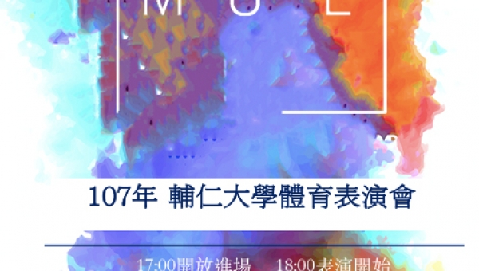
107年輔仁大學體育學系體育表演會活動「Multicolor」將於5月23日晚間在中美堂舉辦，總籌辦人次達400人，
輔仁大學影像傳播學系第二十屆畢業成果展「萬花青春」5月18日至20日將於敦南誠品藝文展演空間舉辦。
輔大影傳系主辦的普洛(Pro)學生影展邁入第六年，今年廣發天下英雄帖，邀請港、澳、美、德、法等各國和台灣各校學生作品參展，，
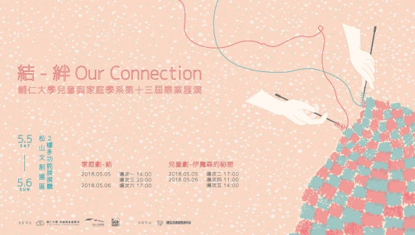
輔仁大學兒童與家庭學系第十三屆畢業展演將於5月5日、6日在松山文創園區2樓多功能展演廳舉辦。
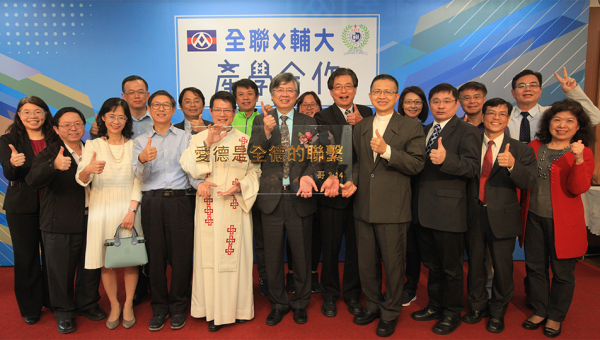
輔仁大學與全聯實業聯手打造的首家校園門市4月18日於焯炤館1樓開幕。
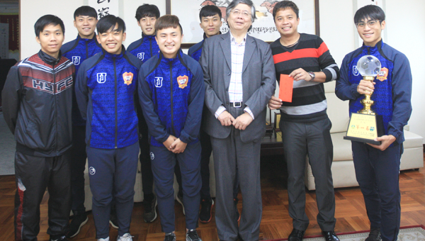
「去年奪冠失利後，我們就告訴教練今年一定要把冠軍留在輔大。」輔大足球隊隊長徐宏銍表示。
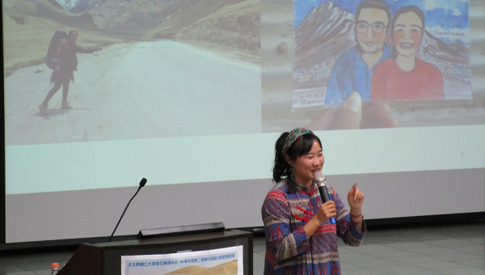
輔仁大學學生輔導中心106學年度第2學期，辦理系列心理衛生講座，期能透過他人的經驗分享，帶給學生不一樣的生命啟發。
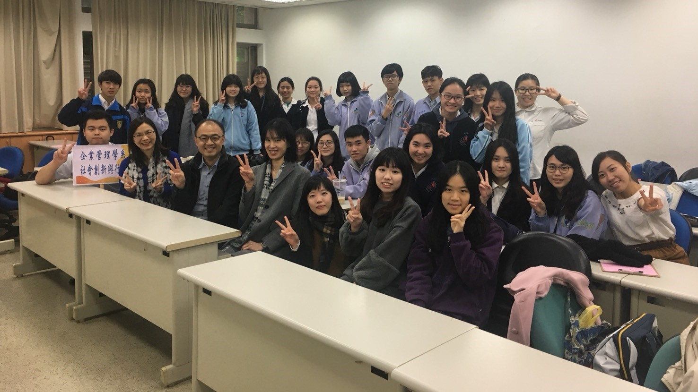
輔仁大學與4所天主教高中攜手合作，於3月9日至5月25日的每周五開設兩大類課程。